Parallel processing in the retina. Different retinal circuits extract different features from the same visual scene, and each ganglion cell type sends its own version of the image to the brain.
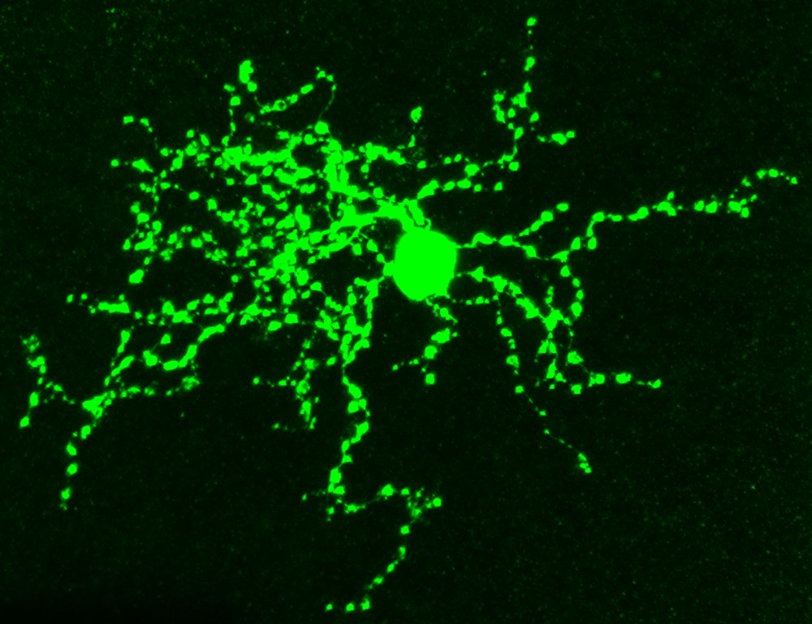
The VG3 amacrine cell. VGluT3-expressing amacrine cells are retinal interneurons that release both glutamate and glycine and play a key role in detecting object motion. VGluT3-expressing neurons are also found in the human retina and throughout the brain.
Research
What I work on
The retina is part of the central nervous system and one of the most accessible places to study how neural circuits compute. Its cell types are well defined, its input can be controlled precisely with light, and its output can be traced all the way to behavior. Rather than simply passing images to the brain, retinal circuits split the visual scene into parallel channels, each tuned to a feature such as contrast, motion, or approaching objects. My Ph.D. work asks how single neurons perform these computations, with a focus on VGluT3-expressing amacrine cells, whose dendrites process inputs locally and send different signals to different targets.
I combine two-photon calcium and glutamate imaging, patch-clamp and multielectrode array recordings, viral and molecular manipulations, and mouse visual behavior. I develop custom analysis pipelines in MATLAB and Python for image processing, signal analysis, and statistics, along with software for visual stimulus design and experimental control. Together, these approaches allow me to link mechanisms in individual dendrites to visually guided behavior.
Before my Ph.D., I studied activity-dependent regeneration of retinal neurons, epigenetic mechanisms in stroke, and RNA sequencing workflows in industry.
Selected projects
Question, approach, finding
Inhibition confines dendritic integration to set behavior-specific sensory gain
Submitted · Nature Communications
C.-I. Lin, A. Jo, P. Ramakrishna, X. Song, J. L. Morgan, D. Kerschensteiner. First author. Presented at ARVO 2024, 2025, and 2026.
This study shows how a single type of retinal interneuron uses inhibition inside its own dendrites to decide how sensitive mice are to looming threats, without changing their sensitivity for other visual behaviors.
Question
Animals see and stabilize their gaze at low contrast, but escape only from high-contrast looming threats so they do not flee from faint shadows. How do sensory circuits give different behaviors different sensitivity to the same visual feature?
Approach
Sparse single-cell CRISPR editing and conditional knockouts of inhibitory receptors in VG3 amacrine cells, combined with two-photon calcium and glutamate imaging, ganglion-cell recordings, connectome-constrained biophysical modeling, and looming-escape and gaze-stabilization behavior.
Finding
Dense, distributed GABAergic inhibition confines integration within VG3 dendrites, preserving maps of contrast polarity and visual space without anatomical compartments, and limits excitatory pooling at low contrast. Removing this inhibition (Gabrg2 deletion in VG3 cells) amplifies low-contrast looming signals in threat-encoding ganglion cells, and mice escape as if contrast were about three times higher, while gaze stabilization is unchanged.
My role
First author. Performed CRISPR genome editing, two-photon imaging, electrophysiology, immunostaining, dendritic arbor reconstruction, and behavior experiments, analyzed the data, and wrote the manuscript with D. Kerschensteiner.
Removing inhibitory receptors from single VG3 cells. Left: an EM reconstruction shows abundant inhibitory amacrine inputs interspersed with OFF and ON bipolar inputs across the VG3 arbor. The schematic shows the targets of sparse CRISPR editing: the GABAA receptor γ2 subunit (sgGabrg2), glycine receptor α2/α3 subunits (sgGlra2/3), and their shared scaffold gephyrin (sgGphn). Right: Gabrg2 editing removes γ2 staining from the edited VG3 cell (tdTomato) while surrounding staining is unchanged.
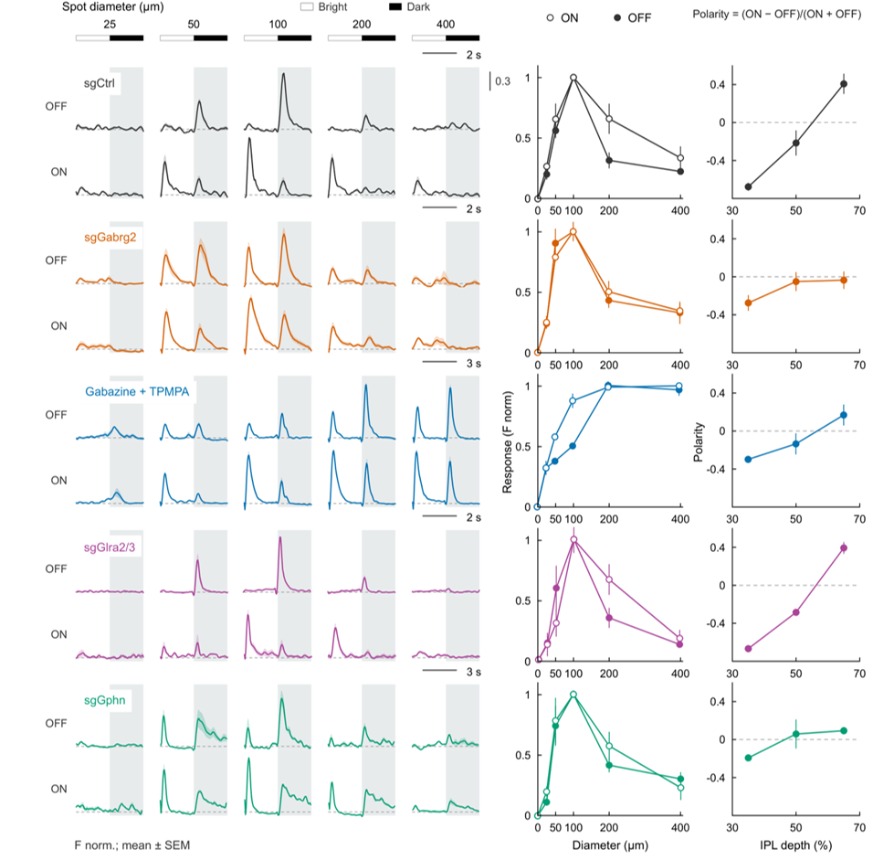
Postsynaptic GABAA inhibition keeps ON and OFF signals apart. Two-photon calcium imaging of VG3 dendrites during bright and dark spots of increasing diameter, after sparse CRISPR deletion of Gabrg2, Glra2/3, or Gphn in single cells, or pharmacological blockade of GABAA/C receptors (gabazine + TPMPA). Postsynaptic GABAA inhibition maintains ON–OFF segregation across IPL depth, whereas presynaptic GABAergic inhibition establishes size selectivity; glycinergic inhibition is dispensable for both.
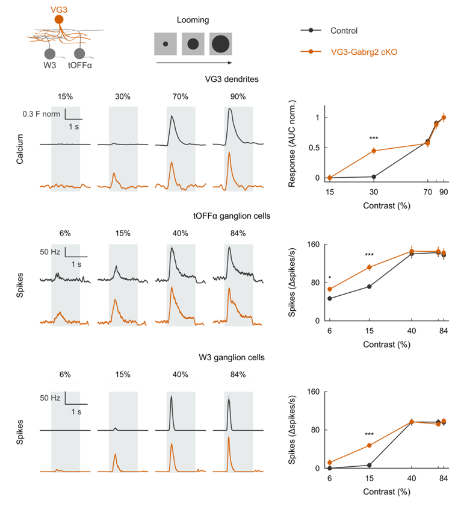
Postsynaptic inhibition shapes contrast sensitivity in the retina. Top: VG3 dendrites imaged while a dark disk expands at increasing contrast. Control dendrites stay nearly silent at low contrast, whereas VG3-Gabrg2 cKO dendrites already respond at 30% contrast. Middle and bottom: spike responses of tOFFα and W3 ganglion cells, the main threat-detecting retinal outputs downstream of VG3 cells. Without VG3 inhibition, both fire more strongly to low-contrast looming, while responses to high contrast match controls.
Inhibition sets contrast sensitivity for threat detection. Mice see an expanding overhead shadow, like an approaching predator, at high and low contrast. Wild-type mice (WT, left, plays first) escape to the shelter from high-contrast stimuli but largely ignore low-contrast ones. Removing GABAA receptor inhibition from VG3 cells (VG3-Gabrg2cKO, right, plays second) increases contrast sensitivity: these mice escape even from low-contrast stimuli.
Molecular mechanism establishing the OFF pathway in vision
Nature Communications 2025
F. Soto, C.-I. Lin, A. Jo, S.-Y. Chou, E. G. Harding, P. A. Ruzycki, G. K. Seabold, R. S. Petralia, D. Kerschensteiner. Nat. Commun. 16, 3708.
Parallel ON and OFF pathways begin at the first synapse of vision, where cones connect to ON and OFF bipolar cells. What molecule builds the cone-to-OFF bipolar cell connection, and how does it shape vision and behavior?
The cone adhesion molecule LRFN2 localizes to contacts with OFF bipolar cell dendrites, stabilizes them, and organizes kainate and AMPA receptor clusters. Without LRFN2, OFF bipolar cells lose direct dendritic excitation but retain contrast-dependent output through ON-driven axonal inhibition. Disrupting LRFN2 weakens retinal looming responses and visually evoked defensive behavior.
My role
Performed and analyzed two-photon glutamate imaging, including the segmentation analysis that identifies bipolar cell axon terminal responses. Developed intraocular L-APB injections to suppress ON-pathway signaling in vivo, and performed ganglion cell calcium imaging and looming behavior experiments.
LRFN2 localizes to the OFF compartment of cone synapses. Cone pedicles form ribbon synapses with invaginating ON bipolar cell dendrites (mGluR6, GPR179) and basal contacts with OFF bipolar cell dendrites (GluK1). Line profiles and overlap analysis show that LRFN2 overlaps most with GluK1, placing it at the OFF compartment.
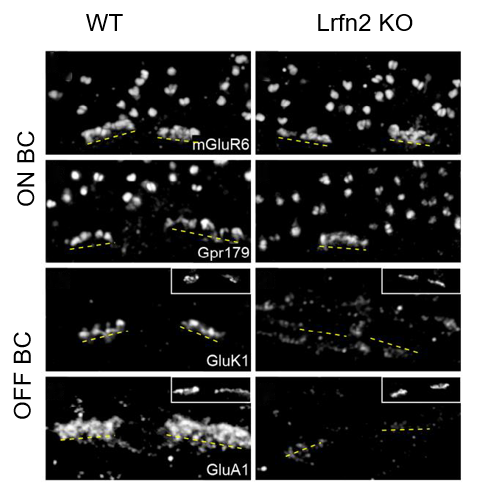
LRFN2 controls compartment-specific synapse assembly. In Lrfn2 KO retinas, ON bipolar synaptic proteins (mGluR6, Gpr179) are preserved, whereas OFF bipolar glutamate receptor clusters (GluK1, GluA1) at cone pedicles are lost.
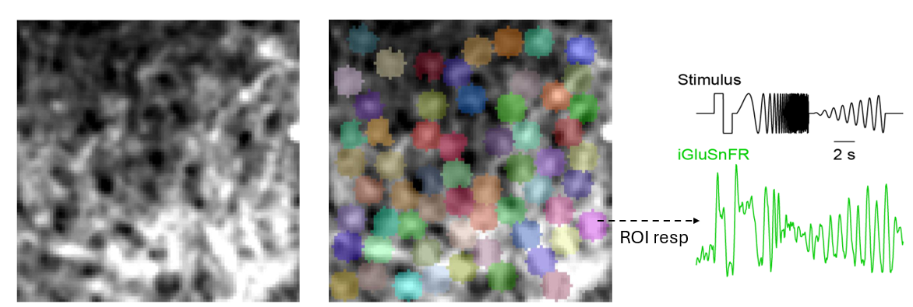
Functional segmentation of bipolar cell axon terminals. I built an image-processing pipeline that identifies individual bipolar cell axon terminals in two-photon iGluSnFR recordings from their light responses. Each region of interest (ROI) is grown from a seed pixel and accepted when it matches the size of a bipolar cell terminal (0.75–4 µm) and every pixel in the cluster correlates with the seed (correlation coefficient > 0.4). Left: mean iGluSnFR image. Middle: segmented ROIs. Right: glutamate response of one ROI to a chirp stimulus.
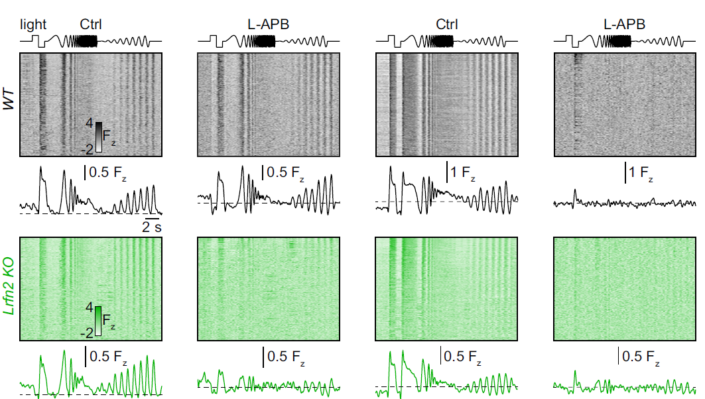
OFF bipolar cells signal through dendritic excitation or ON-driven axonal inhibition. Two-photon iGluSnFR imaging of bipolar cell glutamate release in response to a chirp stimulus, in the OFF (left two columns) and ON (right two columns) sublaminae of wild-type (black) and Lrfn2 KO (green) retinas. OFF bipolar cells in Lrfn2 KO retinas still release glutamate, but this residual output is abolished when the ON pathway is silenced with L-APB, whereas wild-type OFF responses persist.
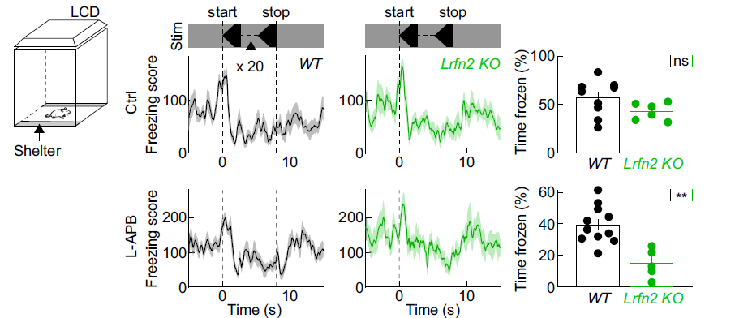
LRFN2 supports looming-evoked defensive behavior. Freezing responses to overhead looming stimuli. Without treatment, wild-type (black) and Lrfn2 KO (green) mice freeze similarly. After intraocular L-APB injection silences the ON pathway, Lrfn2 KO mice freeze much less, while wild-type responses are unaffected.
Subcellular pathways through VGluT3 amacrine cells provide locally tuned object-motion signals
Nature Communications 2024
K. Friedrichsen, J. C. Hsiang, C.-I. Lin, L. McCoy, K. Valkova, D. Kerschensteiner, J. L. Morgan. Nat. Commun. 15, 2965.
Can one amacrine cell send different, locally tuned signals through different parts of its dendritic arbor?
Approach
Serial electron microscopy reconstruction of VG3 amacrine cells and their synaptic partners, combined with two-photon calcium imaging of dendritic responses to object-motion stimuli in sparsely labeled single cells.
Finding
Subcellular pathways through the cell carry object-motion-selective signals tuned to local regions of space.
My role
Established the sparse single-cell labeling approach, pairing a Cre-dependent tdTomato reporter with a non-targeting guide, so that responses could be traced in individual VG3 cells rather than averaged across the surrounding population. Built the functional segmentation that assigns calcium signals to the tdTomato-identified dendrites, and contributed the dendritic-depth analysis below.
Labeling single VG3 cells inside a labeled population. A Cre-dependent tdTomato reporter carrying a non-targeting guide (sgCtrl) is delivered by subretinal injection and electroporation in newborn VG3-iCreER;LSL-GCaMP6f;LSL-Cas9 mice. Only a few VG3 cells take up the construct, so tdTomato marks individual cells within a GCaMP6f-expressing population and their responses can be read out cell by cell instead of as a population average.
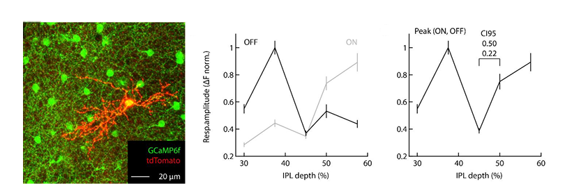
Responses vary across the depth of a single arbor. Left: one tdTomato-labeled VG3 cell among GCaMP6f-expressing cells. Right: normalized calcium response amplitudes to ON and OFF spots as a function of depth in the inner plexiform layer. Responses are strongest in the OFF and ON sublaminae and dip in the center of the arbor, a difference that is only visible when single cells are resolved.
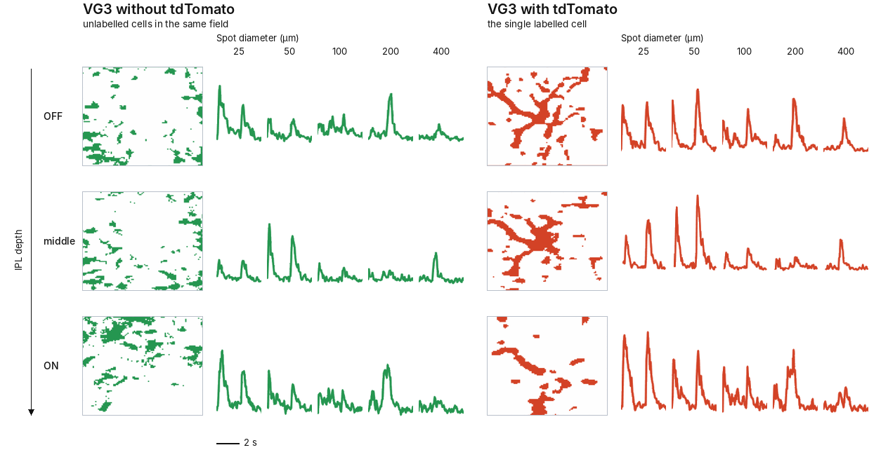
Reading one cell out of a labelled retina. The masks that calcium signals are drawn from, at three depths of the inner plexiform layer, with the average response to spots of increasing diameter. Left (green): VG3 cells without tdTomato, so the signal pools unlabelled cells across the field. Right (red): the mask built from the tdTomato channel follows the dendrites of the one labelled cell, and its responses are better resolved and more clearly tuned to spot size. Each row is plotted on its own amplitude scale.
Blue light promotes neurite outgrowth of retinal explants in postnatal ChR2 mice
eNeuro 2019
C.-I. Lin, C.-C. Chiao. eNeuro 6(4). First author, M.S. work at National Tsing Hua University.
Can raising neural activity with light help retinal neurons regrow their neurites?
Approach
Optogenetic stimulation of retinal explants from ChR2 mice, with tissue culture, electrophysiology, and quantitative image analysis.
Finding
Patterned blue light increased neurite outgrowth from ChR2 retinal explants at both P5 and P11, with 5 and 20 Hz more effective than 100 Hz. Blocking gap junctions showed that activity spreads from ChR2-expressing cells to the wider ganglion cell population. Intrinsically photosensitive retinal ganglion cells (ipRGCs) also respond to blue light and sustain the raised activity over longer periods, which supports greater neurite regeneration.
My role
First author. Designed the study and carried out all experiments, including explant culture, optogenetic stimulation, multielectrode array recordings, immunostaining and imaging. Developed the image analysis for quantifying neurite outgrowth, performed the statistics, and wrote the manuscript.
optogeneticsregenerationexplant culture
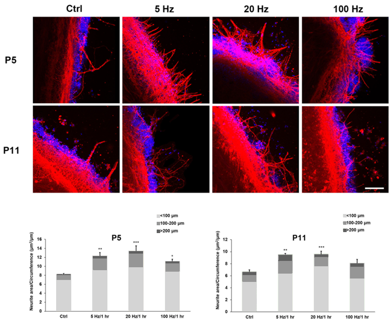
Patterned blue light promotes neurite outgrowth. Retinal explants from ChR2 mice at P5 and P11, stimulated for one hour with blue light at 5, 20 or 100 Hz. Neurites are red and nuclei blue. Outgrowth, measured as neurite area per explant circumference, increases at 5 and 20 Hz at both ages, with a weaker effect at 100 Hz.
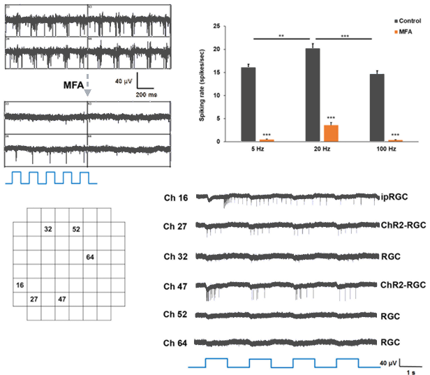
Gap junctions spread the light-evoked activity. Multielectrode array recordings from ChR2 retinas during blue light stimulation. Blocking gap junctions with meclofenamic acid (MFA) strongly reduces spiking at all three stimulation frequencies, leaving responses only in the few cells that express ChR2 directly. Activity therefore spreads from ChR2-expressing cells to the wider ganglion cell population.
Histone deacetylase 3 inhibition decreases cerebral edema and protects the blood–brain barrier after stroke
Molecular Neurobiology 2023
H. Lu, R. Ashiqueali, C.-I. Lin, A. Walchale, V. Clendaniel, R. Matheson, M. Fisher, E. H. Lo, M. Selim, A. Shehadah. Mol. Neurobiol. 60, 235–246. Third author.
Work from my time at Beth Israel Deaconess Medical Center, outside the retina: an epigenetic target for limiting brain injury after stroke.
Question
After a stroke, swelling and a leaky blood–brain barrier make the injury worse. Can blocking the epigenetic enzyme HDAC3 protect the barrier and limit the swelling?
Approach
Middle cerebral artery occlusion in rats, treated with a selective HDAC3 inhibitor (RGFP966) after stroke, with neurological scoring, histology, Evans blue and FITC-dextran permeability assays, western blot and zymography, and immunostaining.
Finding
Early RGFP966 treatment reduced cerebral edema and blood–brain barrier leakage, raised the tight junction proteins claudin-5 and ZO-1 in the peri-infarct area, and lowered HDAC3 and aquaporin-4 in GFAP-positive astrocytes. The drop in astrocytic HDAC3 tracked with better neurological scores and less swelling.
My role
Contributed to the study design. Established and performed cryosectioning and histology, Evans blue permeability assays, western blotting, and immunostaining, and analyzed the resulting data.
stroke modelepigeneticsblood–brain barrierimmunostainingwestern blot
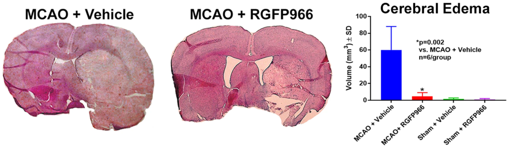
HDAC3 inhibition reduces swelling after stroke. Brain sections after middle cerebral artery occlusion, treated with vehicle or the HDAC3 inhibitor RGFP966, with edema volume for each group. Treated animals show markedly less swelling than vehicle-treated animals.
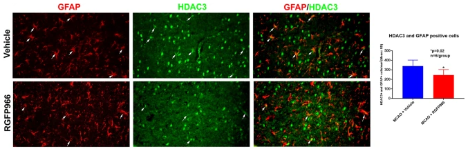
The drug acts on astrocytes. GFAP and HDAC3 staining in the peri-infarct area. RGFP966 lowers the number of astrocytes expressing HDAC3, and that reduction tracks with better neurological scores.
Publications
All papers
2026
Inhibition confines dendritic integration to set behavior-specific sensory gain
C.-I. Lin, A. Jo, P. Ramakrishna, X. Song, J. L. Morgan, D. Kerschensteiner
Submitted to Nature Communications
2025
Molecular mechanism establishing the OFF pathway in vision
F. Soto, C.-I. Lin, A. Jo, S.-Y. Chou, E. G. Harding, P. A. Ruzycki, G. K. Seabold, R. S. Petralia, D. Kerschensteiner